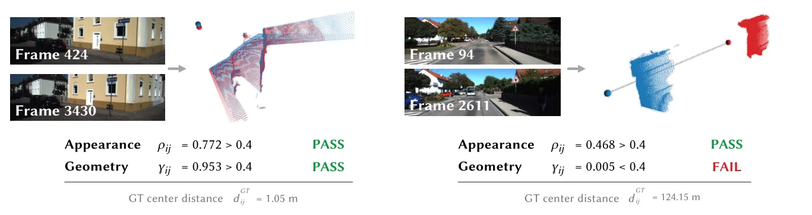
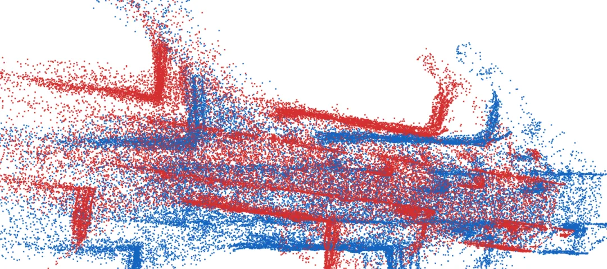
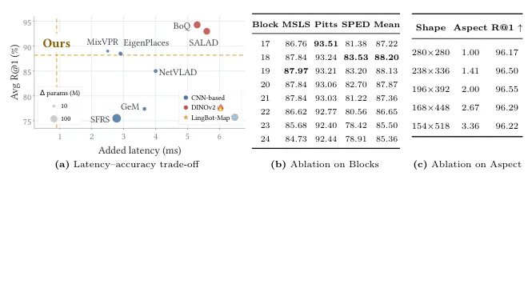
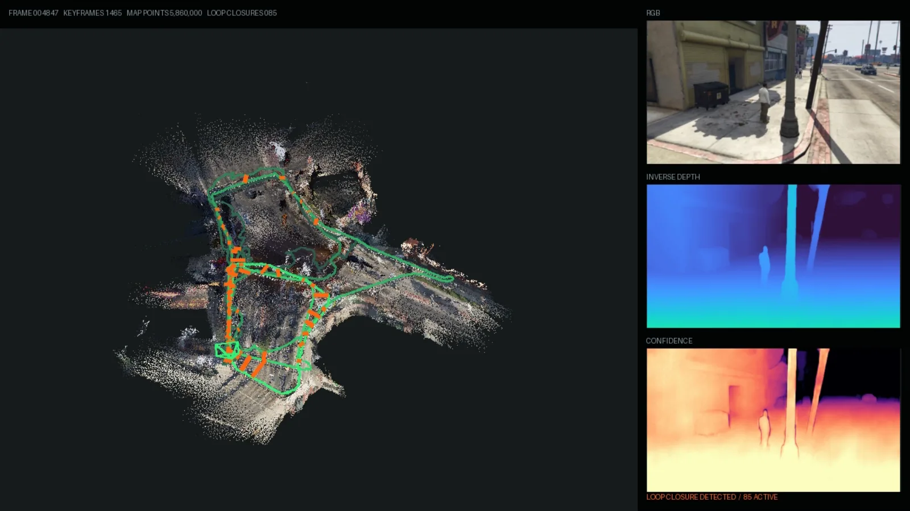

Map2SLAM：把流式 3D 基础模型的输出当“观测”，用可回滚状态和异步重观测搭出 28 FPS SLAM
Map2SLAM: From Streaming Map Prediction to Real-Time SLAM
在 KITTI、VBR、Oxford Spires 三个无标定基准上平均 ATE 分别 7.56 m、5.15 m、3.07 m，比各自第二好的无标定方法低 42.7%–48.3%；KITTI Sequence 00 上 29.1 FPS（518×154，RTX 5090D）。消融最能说明问题：只加回环检索与 iPGO、不做几何校验，KITTI 平均 ATE 从 15.28 m 恶化到 71.83 m；加上成对几何校验后回到 7.53 m。
Mean ATE on KITTI
Mean ATE on VBR
Mean ATE on Oxford Spires
Front-end FPS on KITTI 00
作者、单位与技术谱系 · Research context
作者与单位
研究脉络
- LingBot-Map（Chen et al., 2026）方法基座关系：本篇冻结它、只在其推理接口上搭 SLAM；双向前缀与因果续推两种模式都来自它[论文 §3 开头]
- VGGT-Long / MASt3R-SLAM / VGGT-SLAM 2.0方法上游关系：代表“分块对齐 / 基础模型当前端 / 子图对齐”三条已被探索的路线，本篇以它们为对照与问题来源[论文 §1 与表 1–3]
- SALAD（Izquierdo & Civera, 2024）+ riSAM/GNC-TLS方法上游关系：检索头与增量稳健图优化的现成组件[论文 §3.3.1]
- Map2SLAM 本篇推进本篇推进关系：把“何时推理、哪些帧进上下文、预测更新哪个状态”变成显式调度问题[论文 §4.2 图 5]
单位列表与通讯作者标注来自论文首页；技术依赖来自正文的 “builds on / frozen / following” 措辞。HTML 未给出逐人单位对应，故不推断个人隶属，也不推断企业导师关系。
方法本质拆解 · What actually changed
是不是微调？
几乎不训练：LingBot-Map 的 Frame Encoder 与 Geometry Reasoner 全部冻结，只训练一个 1.8M 参数的 SALAD 聚合头（GSV-Cities，10 epoch，224×224，约 2 小时单卡），用于把缓存 token 变成全局描述子。其余部分（iPGO、GNC-TLS、稠密优化）都是测试时优化，没有可学习权重；因此它更像“给冻结模型写调度器”，而不是再训一个 SLAM 网络。
有没有额外约束？
约束有三类：前端上下文被窗口预算 N_b 硬性截断，超预算必须重开前缀并用重放关键帧估计 Sim(3) 对齐；关键帧提交由投影运动 m_i>τ 决定，未通过则回滚 KV；回环必须同时过外观阈值（相似度 ≥0.40）与几何阈值（双向深度一致像素比 ≥0.40），iPGO 再把回环当 Sim(3) 相对测量、用 GNC-TLS 权重与 Huber 核抑制冲突。
推理/后端到底做了什么？
推理是“同一编码器、两种注意力模式”：前端用因果续推逐帧出位姿/深度/内参，后端在选中历史帧上重跑双向前缀（多视图联合推理），两条路径共用一次 Frame Encoder 前向的缓存。后端确实有全局优化：在线是 Sim(3) 增量位姿图（iSAM2），离线是分段多视图重观测后的位姿-深度联合 LM 优化（Schur 消元），并用 Sim(3) 修正量插值把关键帧改正传播到非关键帧。
方法本质是什么？
本质是把“模型输出”降级为“观测”，把“SLAM 状态”升级为独立、可回滚、可被回环修正的持久对象；模型只负责在指定上下文里产生几何观测，是否写入状态、写哪一帧、何时重看历史都由外层调度决定。它没有做的是提升底座模型本身的几何能力，也没有解决无回环长序列的漂移；一旦检索漏掉回环，系统仍会按窗口累积误差。
输入是视频流 + 冻结的流式 3DFM；改变的位置是“预测→状态”的写入接口与后端推理调度；约束动作是投影运动门控、窗口预算、Sim(3) 图优化与几何校验；直接效果是漂移可被回环在线修正且保持 28 FPS 以上。

结论与问题Conclusion & Motivation
核心结论
Map2SLAM 的结论是：当流式 3D 基础模型的几何已经足够好时，SLAM 的关键不再是模型能力，而是“怎么调度推理、怎么让预测保持可修正”。它把 LingBot-Map 完全冻结，只加一个 1.8M 参数的检索头，就在三个无标定基准上把平均 ATE 压到 7.56/5.15/3.07 m，比第二好的无标定方法低 42.7%–48.3%。同时保持 28 FPS 以上的实时跟踪（KITTI 00 实测 29.1 FPS），说明“冻结大模型 + 轻量系统层”这条路是可行的。
动机与问题
流式 3DFM 的预测是“一次性发出”的：随着序列变长误差累积，即使相机回到旧地点，之前的估计也不会被修改，这与 SLAM 要求的“状态可被回环修正”直接冲突。已有结合方式要么按固定分块对齐、要么把 3DFM 当前端塞进经典管线、要么在流式模型上挂一个回环模块，共同点是调用模式固定，没有把“何时重看历史、哪些帧进入上下文、预测更新哪个状态”当成设计变量。作者借用 LLM agent 的 harness 类比：模型不变，靠外层调度决定它看到什么。
方法Method
方法总览
前端在有界窗口内用 Causal Continuation 跟踪，每个新帧先做一次 Keyframe Probe：用预测几何算出相对上一关键帧的投影运动 m_i，超过阈值 τ 才提交为关键帧，否则回滚 KV 更新；窗口到预算 N_b 时清空缓存，用新前缀重开，并用重放关键帧的深度比与位姿把新窗口的 Sim(3) 规范对齐到已有轨迹。后端有两条同构路径：在线纠偏（回环检索 → 成对几何校验 → iPGO）和序列结束后的稠密几何精化（分段调度 → 多视图前缀重观测 → 位姿/深度联合优化）。所有路径共享同一次 Frame Encoder 前向的缓存特征，因此反复重观测不额外付编码成本。
关键技术细节
回环检索把 SALAD 聚合头接在 Frame Encoder 的中间 token 上（实验选出 Block 18，R@1 88.20），每个关键帧要等 64 个后续关键帧才可检索，每次查询保留最多 5 个相似度 ≥0.40 的候选，验证成功后抑制两端半径 5 的邻域，避免同一处反复触发。成对几何校验用一次全新的双视图前缀联合预测位姿/深度/内参，再做双向深度一致性：相对误差 <0.10 的像素比例 γ_ij=min(γ_i→j,γ_j→i) ≥0.40 才接受。iPGO 在 Sim(3) 上建图（固定首帧消规范自由度），用 GNC-TLS 给回环鲁棒权重、权重 ≥0.5 才进入活跃集，后端是 iSAM2 增量图；序列结束后做分段（24 帧窗、重叠 6）多视图重观测，再用 LM + Schur 消元联合优化关键帧位姿、逐帧 log 深度与共享内参。

实验Experiments
实验设置
数据集：KITTI Odometry 00–10（00 为 4541 帧/3.70 km）、VBR 七段（含 14141 帧/1.56 km 的 Spagna-0）、Oxford Spires 四个场景共 11 段；全部按一次全局 Sim(3) 对齐后算 ATE，并分“有标定/无标定”两组排名。指标：每段 ATE 与均值，另有 RPEt/RPEr 与端到端 FPS、每 GPU 显存。对照：ORB-SLAM3、DROID-SLAM、DPV-SLAM++（标定组），DROID-Calib、VGGT-Long、SwiftVGGT、VGGT-SLAM 2.0、LoGeR、LingBot-Map 流式/窗口两种模式、HorizonStream、ABot-Recon；硬件为两张 RTX 5090D，前后端各占一张。
实验数字与比较
主结果：KITTI 平均 ATE 7.56 m，对比第二好的无标定方法 ABot-Recon 13.56 m；VBR 5.15 m 对 9.97 m；Oxford Spires 3.07 m 对 5.36 m，三条线分别改善 44.3%/48.3%/42.7%（摘要写 42.7–48.3%）。逐段看，KITTI 00 为 3.51 m（ABot-Recon 11.67 m），KITTI 01 为 26.94 m（该段所有方法都偏差大），28 段中有 26 段排名第一或第二。检索质量：1.8M 参数头在 MSLS-val/Pitts250k/SPED 上的 R@1 为 87.8/93.2/83.5，单次描述子耗时 0.94 ms，与 EigenPlaces（88.5 均值）接近但仍低于专用 DINOv2 检索器。效率：KITTI 00 前端 29.1 FPS；在线阶段两卡峰值显存 9.73 GiB 与 6.98 GiB，终端稠密优化把第二张卡推到 12.94 GiB；KITTI 00 从 4541 帧选出 2208 关键帧、只发 429 次检索查询、2141 个候选对里仅 175 个（8.2%）进入成对校验、59 个通过。
消融/失败边界
成对几何校验是“生死开关”：仅 Causal Tracking 时 KITTI 平均 15.28 m；加上回环检索与 iPGO 但去掉几何校验，ATE 恶化到 71.83 m、RPEt 52.92 m；加上校验后回到 7.53 m，说明外观检索的假回环足以毁掉轨迹。GNC-TLS 对均值几乎无影响（7.534→7.568 m），但在 VBR diag_train0 的冲突回环压力测试里把 ATE 从 35.641 m 拉回 4.489 m，属于鲁棒性保险。稠密几何精化若让分段对齐自由优化，RPE 从 0.604 m/0.423° 降到 0.289 m/0.302°，但全局 ATE 从 7.568 m 恶化到 12.962 m；把分段对齐固定为 iPGO 的解后，ATE 恢复 7.489 m 且 RPE 保持 0.296 m/0.306°，这说明“局部更准”与“全局一致”会互相拉扯。失败边界：Oxford Spires 上仍输给有标定的 DPV-SLAM++（3.07 vs 2.28 m）；KITTI 01 高速段 26.94 m，说明大视角变化下检索与位姿都吃紧。
局限与迁移Limitations & Transfer
局限与待核验
论文没有单列 Limitations 章节，作者在结论里只强调“保持局部稳定、允许全局修正”，未正面讨论失效条件；从数据看，最明确的限制是需要两张高端 GPU 且终端稠密优化把显存推到 12.94 GiB，边缘平台难以部署。我们待核验：窗口预算 N_p/N_b 的具体取值在 HTML 抽取中只以符号出现，未读到数值；回环召回率（多少真实回环被 0.40 阈值漏掉）没有报告；稠密优化只在序列结束后执行，在线阶段的地图精度没有单独指标；所有实验都基于冻结的 LingBot-Map，换一个更弱或更强的底座是否仍成立，论文没有做跨底座对照。
与你研究路线的关系
最值得迁移的是“预测即观测”的状态设计：基础模型（或 GNSS/视觉先验）输出的不是最终状态，而是带来源与时戳的观测，进入一个可被回环与稳健核修正的持久图。这和我们做 PPP/INS 平滑器时“先验不能直接覆盖状态”的原则一致。第二个可迁移模块是 Keyframe Probe 的提交/回滚判据：用投影运动阈值决定是否把一帧写进状态，避免上下文无限增长导致抖动，这个判据可以直接搬到我们多源融合的关键帧管理。下一步实验：在我们的数据集上把“固定滑窗 + 全量优化”与“提交/回滚 + 异步重观测”做 A/B，指标同时看 ATE、RPE 与单帧延迟，确认收益来自调度而非模型本身。





